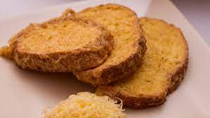

Bundás Kenyér

A szikkadt kenyér legjobb felhasználása, ha bundás kenyeret készítesz belőle, mely napindítónak is tökéletes, de vacsorára is elfogyaszthatod.
- 1 szelet kenyér [fejenként]
- 1 db tojás [fejenként
- 1 gerezd fokhagyma [fejenként]
- Olaj
- Só [OPcionális]
- A tojásokat egy mély tányérba ütjük, és egy villával felverjük.
- A kenyérszeleteket félbe vágjuk és egyenként a tojásba forgatjuk.
- Kicsit benne is hagyhatjuk, hogy megszívja magát a tojással.
- Egy serpenyőbe kevés olajat teszünk és ha felforrósodott, akkor beletesszük a kenyérszeleteket és mindkét oldalukat aranybarnára sütjük.
- Ha kész, félbevágott fokhagymával mindkét oldalát bedörgöljük.